01The Origin
Grown, not mined.
Every Centurion diamond begins as a carbon crystal grown in the lab — chemically, physically and atomically the same as an earth mined diamond, but created through innovation rather than excavation.
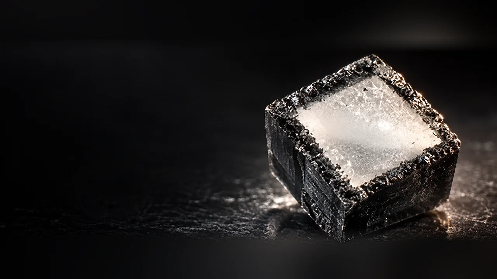
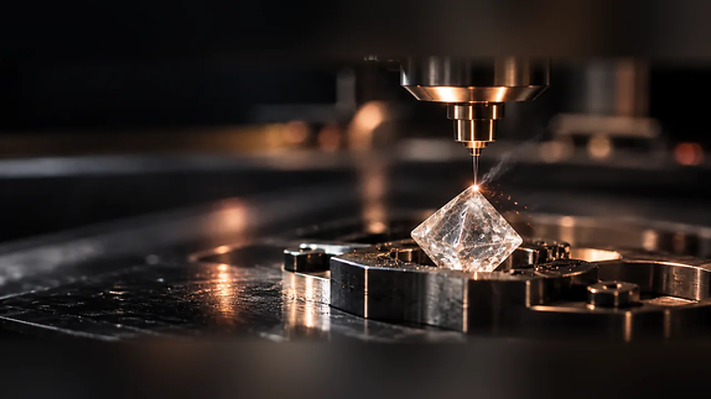
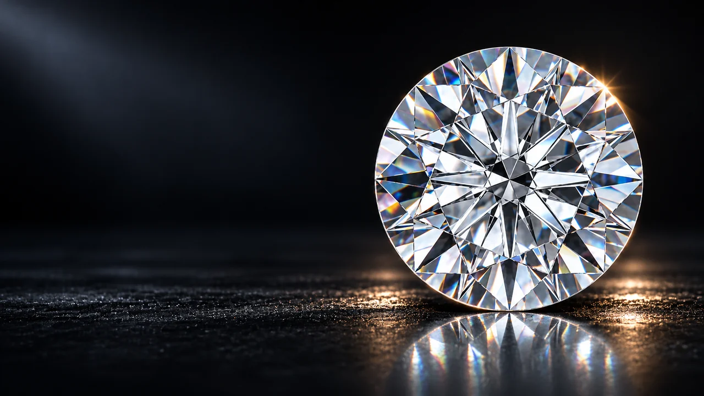
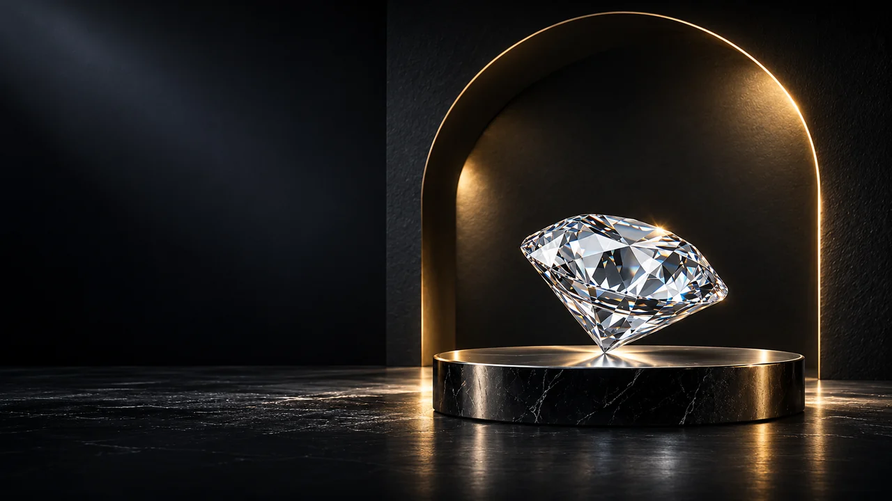
Centurion Diamond · Lab-Grown
The journey from a lab-grown crystal to one hundred facets of light.
01The Origin
Every Centurion diamond begins as a carbon crystal grown in the lab — chemically, physically and atomically the same as an earth mined diamond, but created through innovation rather than excavation.
02The Craft
Each lab grown carbon crystal is mapped, laser-planned and hand finished by master craftsmen to the proprietary 100-facet Centurion Cut.
03The Reveal
100Facets
vs. 58 in a traditional cut
Nearly twice the facets of a traditionally cut diamond — engineered to capture and return more light, more fire and more sparkle.
04The Masterpiece
All Centurion lab grown diamonds are GSI certified with light performance statistics to be at least 20% brighter than a traditional diamond.
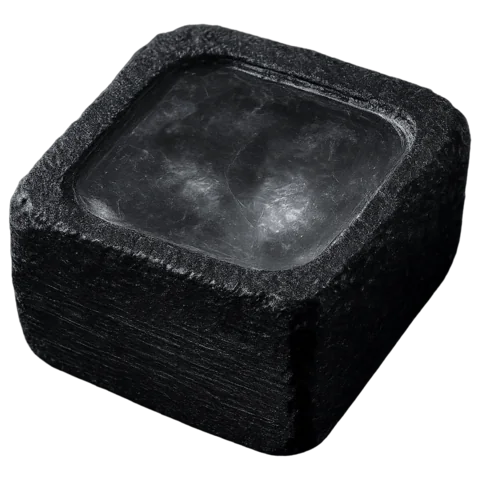
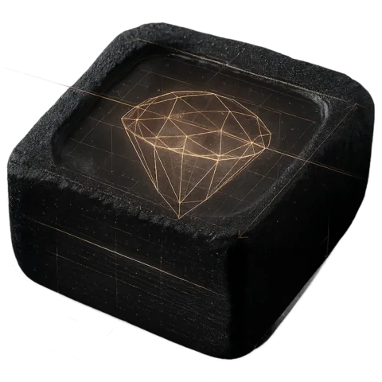
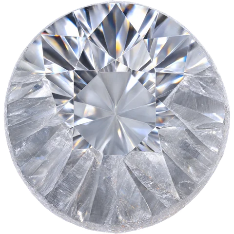
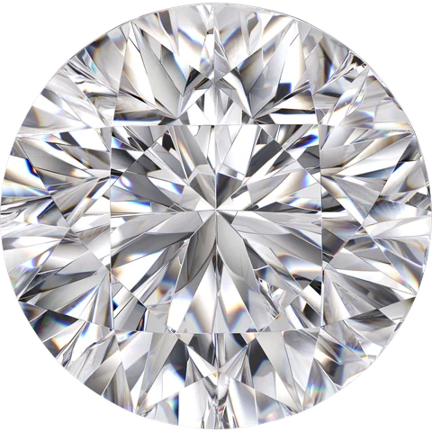
01 The diamond journey
It begins as a seed and forms into rough, with the beauty yet to be defined.
Mapping & precision
Once the rough has been 3D scanned, the geometry comes to life for the best possible shape, cut and size.
100 facets of brilliance
100 facets, each one precisely cut for pure brilliance.
An illustrative study of a lab-grown diamond, rough to polished
02The Centurion Cut
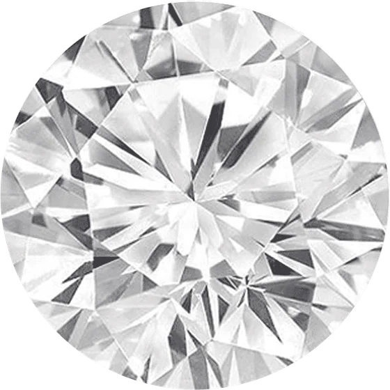
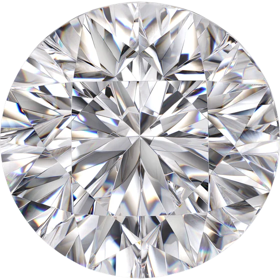
The Centurion Diamond is designed with 100 facets, creating a distinctive play of light and sparkle.
See the difference.
03Light Performance
Once you see a Centurion diamond you will know. Each Centurion diamond is light performance tested to be 20% brighter to the untrained naked eye just by looks.
20%
Brighter than a traditional diamond
The brightness, fire and scintillation can be seen through the showcase.
The light performance test
In GSI’s Light Analysis the Centurion Diamond grades Excellent for brilliance, fire and scintillation, where an average diamond grades Good.
GSI certified
All Centurion lab grown diamonds are GSI certified with light performance statistics to be at least 20% brighter than a traditional diamond.
View the sample reportLight Analysis by GSI
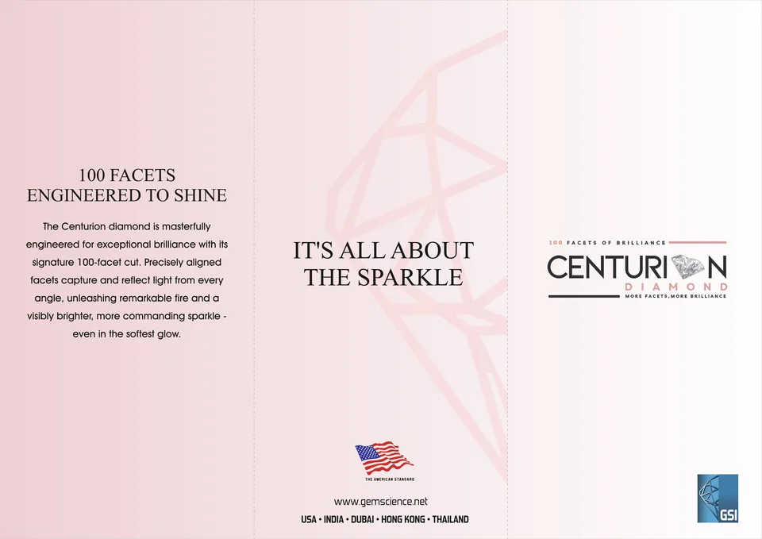
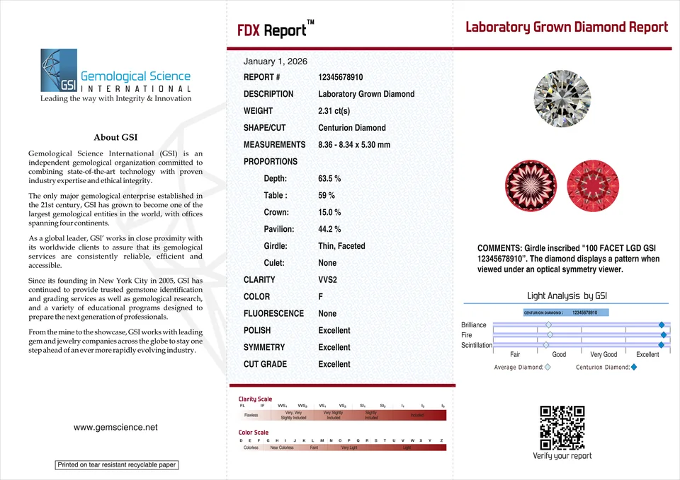
04The Centurion Advantage
01/ 04
That’s right — Round, Oval, Radiant, Emerald, Pear, Marquise, Elongated Cushion, Princess, Heart, Asscher, Moval — all with 100 facets.
02/ 04
The advanced cut amplifies the diamond’s glow, making it shine even in the softest light.
03/ 04
A modern take on classic beauty, crafted for those who desire exceptional sparkle and distinction.
04/ 04
It is just better brilliance — visible to the naked, untrained eye.
Exclusivity
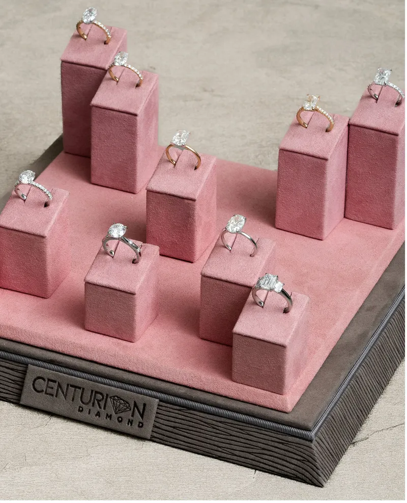
07At Retail
The Centurion Collection comes with a thoughtfully crafted display, distinguished by its sophisticated branded presentation.
The collection arrives as a complete statement, not a loose assortment.